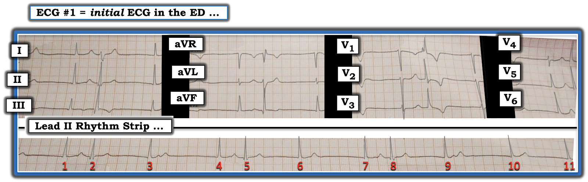
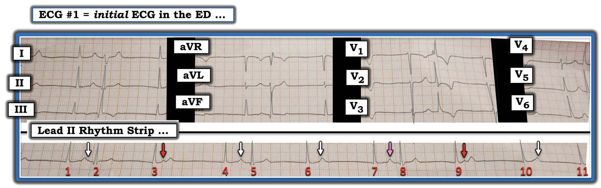
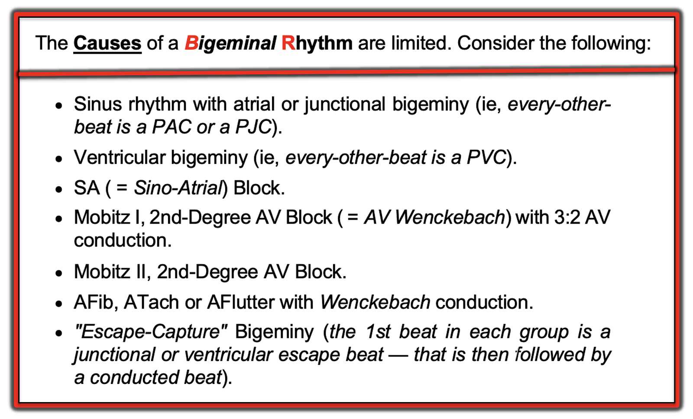
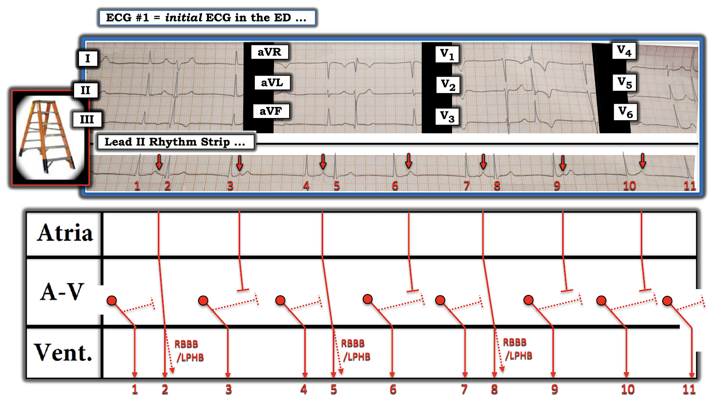

ECG Blog #315 — Nhịp chậm và đau bụng
Điện tâm đồ ở Hình-1 — được ghi từ một phụ nữ 65 tuổi đến khoa Cấp cứu (ED — Emergency Department) vì đau bụng. Không đau ngực. Bệnh nhân ổn định huyết động vào thời điểm ghi điện tâm đồ ở Hình-1.
- BẠN sẽ diễn giải điện tâm đồ ở Hình-1 như thế nào?
- Đây là nhịp gì?


===============================
LƯU Ý: Điện tâm đồ trong ca hôm nay được tái tạo từ ảnh chụp bằng điện thoại thông minh. Vì vậy — bản ghi bị nghiêng và hơi biến dạng. Dù vậy — ưu điểm của việc truyền bản ghi qua điện thoại thông minh là chỉ trong vài giây — có thể hội chẩn từ bất cứ nơi nào trên thế giới có kết nối internet.
- Dù có phần biến dạng — việc diễn giải chính xác nhịp ở Hình-1 vẫn hoàn toàn có thể!
- Cũng xin LƯU Ý: Dải nhịp DII dài trong ảnh chụp này không được ghi hoàn toàn đồng thời với điện tâm đồ 12 chuyển đạo phía trên nó. Điều này làm việc diễn giải bản ghi thêm khó — vì chúng ta mất khả năng so sánh trực tiếp thay đổi hình dạng QRS của từng nhát trong dải nhịp — với thay đổi hình dạng trên 12 chuyển đạo. BẠN có sẵn sàng nhận thử thách không?
===============================
Cách Tiếp cận của tôi với điện tâm đồ ở Hình-1:
Như mọi khi — tôi thích bắt đầu với dải nhịp dài ở cuối bản ghi trước khi tập trung vào 12 chuyển đạo. Cách tiếp cận hệ thống của tôi với mọi rối loạn nhịp gặp phải được gói gọn trong mẹo ghi nhớ "Watch Your Ps, Qs and the 3Rs" (hãy để ý sóng P, sóng Q và 3R) (Xem ECG Blog #185):
- Nhịp chung là chậm. Nhịp không đều. Dù vậy — nhịp có vẻ có một "quy luật" nhất định, ở chỗ có những nhát ghép cặp cách QRS đi trước một khoảng tương tự nhau (tức là khoảng ghép (coupling interval) của các nhát #2, 5 và 8 trên dải nhịp dài có vẻ bằng nhau).
- Dù biết bản ghi này có phần biến dạng — nhiều khoảng R-R dường như lặp lại! Nghĩa là — khoảng R-R giữa các nhát #2-3; 5-6 và 8-9 có vẻ như nhau! (tức là dài gần 6 ô lớn).
- Các khoảng R-R dài hơn một chút giữa các nhát #3-4; 6-7; 9-10 và 10-11 cũng có vẻ bằng nhau! (tức là dài khoảng 7 ô lớn). Sự lặp lại các khoảng này không phải ngẫu nhiên!
Tiếp tục với Ps, Qs & 3Rs:
- Phức bộ QRS của nhịp nền hẹp. Nghĩa là — nhát đầu tiên của mỗi nhóm (tức là các nhát #1, 3, 4, 6, 7, 9, 10 và 11) hẹp và không có sóng P nào đi trước! Do đó, mỗi nhát này phải là một nhát "thoát" bộ nối (với tần số thoát bộ nối ở đây nằm trong khoảng phù hợp của nhịp bộ nối, từ 40-60/phút).
- Tiếp theo, tôi tìm sóng P. Bản ghi này có một số sóng P! Để rõ ràng, ở Hình-2 — tôi đã thêm các mũi tên màu để làm nổi bật những sóng P mà tôi tin là có mặt.


ĐIỂM THEN CHỐT #1: Cách Tìm Sóng P ...
MẤU CHỐT để diễn giải nhịp hôm nay nằm ở việc nhận ra những sóng P đang có mặt. Việc này không dễ! — vì phần lớn sóng P trên bản ghi này bị che khuất một phần (hoặc hoàn toàn) trong sóng T đi trước.
- Hãy bắt đầu bằng cách xác định những dao động mà bạn biết chắc là sóng P (các mũi tên ĐỎ).
- Đến đây tôi tự hỏi: "NẾU có một nhịp xoang đều nền — thì khoảng P-P sẽ phải là bao nhiêu?" Tôi cân nhắc câu trả lời dựa trên việc biết chắc rằng 2 mũi tên ĐỎ ở Hình-2 chắc chắn là 2 sóng P.
- Đi ngược lại từ mũi tên ĐỎ thứ 2 — rõ ràng không có sóng P nào trong khoảng R-R giữa các nhát #8-9. Nhìn kỹ từng sóng T của các nhát #1, 4, 6, 7 và 10 — tôi thấy sóng T của nhát #7 trông khác (tức là đỉnh nhỏ hơn — như mũi tên HỒNG gợi ý).
- NẾU mũi tên HỒNG này thực sự đánh dấu một sóng P bị che khuất một phần — thì khoảng P-P trên bản ghi này có thể là khoảng cách giữa mũi tên HỒNG này — và mũi tên ĐỎ xuất hiện ngay sau nhát #9.
- NẾU điều này đúng — thì các sóng P còn lại ở Hình-2 có thể đang ẩn trong (và làm biến dạng nhẹ) sóng T của các nhát #1, 4, 6 và 10 (như các mũi tên TRẮNG đánh dấu).
ĐIỂM THEN CHỐT #2: Bắt buộc phải dùng compa đo!
Như tôi đã nhấn mạnh nhiều lần trên ECG Blog này — nhiều rối loạn nhịp phức tạp không thể diễn giải được trừ khi bạn dùng compa đo (calipers).
- Tính đến sự biến dạng nhẹ đã nêu trên dải nhịp, cũng như một mức độ loạn nhịp xoang (rất thường đi kèm nhịp chậm xoang) — tôi mất không quá vài giây để đưa ra giả định về vị trí có thể có của các sóng P xoang nền mà tôi đánh dấu bằng các mũi tên màu ở Hình-2. Tôi đơn giản là không thể nhận ra những sóng P này nếu không có compa đo.
ĐIỂM THEN CHỐT #3: Sẽ Dễ Hơn Khi Bạn Biết Mình Đang Tìm Gì!
Giải một rối loạn nhịp phức tạp cũng giống như phá án trong truyện trinh thám. Phần lớn trường hợp — chỉ có một số hạn chế khả năng. Trong ca hôm nay — "quy luật" của nhịp là nhịp chậm với các nhát ghép cặp từng lúc (tức là có nhịp đôi từng lúc).
- Như đã bàn trong ECG Blog #243 — chẩn đoán phân biệt của nhịp đôi (bigeminal rhythm) là có giới hạn. Một khi đã biết các khả năng gây nhịp đôi (mà tôi tóm tắt ở Hình-3) — việc nhận ra tần số chậm với nhát thoát bộ nối ở cuối mỗi khoảng R-R dài hơn ở Hình-2 — phải ngay lập tức gợi ý "thoát–bắt được" (escape-capture) là cơ chế nhiều khả năng nhất. Không thực thể nào khác trong Hình-3 hợp lý cả. Vì vậy — tôi ngay lập tức nghi ngờ (và tìm kiếm) cơ chế thoát–bắt được cho nhịp hôm nay.


GIẢN ĐỒ BẬC THANG:
Một bức hình đáng giá 1,000 lời! Cách dễ nhất để minh họa cơ chế trong ca hôm nay là dùng giản đồ bậc thang (laddergram) (Hình-4).


Nhận xét cuối cùng:
Như đã nêu ở trên — dải nhịp DII dài trong bản ghi hôm nay không được ghi hoàn toàn đồng thời với điện tâm đồ 12 chuyển đạo phía trên nó.
- ĐIỂM THEN CHỐT #4: Có rất nhiều hệ thống ghi điện tâm đồ đang được sử dụng trên khắp thế giới. Hệ thống dùng cho bản ghi hôm nay khác với những hệ thống ghi mà tôi quen dùng. 3 nhát đầu tiên trên dải nhịp DII dài được ghi đồng thời với 3 nhát thấy ở các chuyển đạo I, II và III của điện tâm đồ 12 chuyển đạo.
- Sau đó, điện tâm đồ 12 chuyển đạo cho thấy hình dạng của chính 3 nhát đầu tiên này của dải nhịp dài ở từng nhóm trong 3 nhóm chuyển đạo còn lại (tức là ở các chuyển đạo aVR,aVL,aVF — ở các chuyển đạo V1,V2,V3 — và cuối cùng ở các chuyển đạo V4,V5,V6).
- Ví dụ — nhát thứ 2 ở chuyển đạo V1 có hình ảnh RBBB. Nhát này tương ứng với nhát #2 trên dải nhịp dài.
- Lưu ý rằng nhát #2 này trên dải nhịp DII dài — tương ứng với nhát thứ 2 được ghi ở nhóm chuyển đạo gồm I, II và III. Sóng S tận rộng ở chuyển đạo I của nhát #2 này phù hợp với dẫn truyền kiểu RBBB.
- Cuối cùng — Lưu ý rằng hình dạng QRS của nhát #2 này cho thấy sóng S rất sâu ở chuyển đạo I — và dạng qR ở các chuyển đạo II và III — phù hợp với dẫn truyền kiểu LPHB.
- ĐIỂM THEN CHỐT #5: Mỗi nhát ghép cặp trên dải nhịp DII dài (tức là các nhát #2, 5 và 8) trông giống nhau — ở chỗ mỗi nhát đều rộng hơn một chút so với các nhát #1,3,4,6,7,9,10,11 (vì chúng có sóng S tận). Vì hình dạng QRS của các nhát #5 và 8 giống hệt nhát #2 trên dải nhịp dài — cả 3 nhát này hẳn đều dẫn truyền với lệch hướng kiểu RBBB/LPHB!
- Hoàn toàn dễ hiểu khi các nhát "bắt được" được dẫn truyền này (tức là các nhát #2,5,8) có thể dẫn truyền lệch hướng — vì mỗi nhát đều xuất hiện sớm trong chu kỳ, vào lúc các sóng P này có thể rơi vào thời kỳ trơ tương đối.
KẾT LUẬN:
Vấn đề chính trong ca hôm nay là nhịp chậm xoang rõ rệt. Có lẽ đây chỉ đơn giản là hậu quả của tăng trương lực phế vị (vasovagal) do đáp ứng với cơn đau bụng của bệnh nhân?
- Vì tần số nhịp chậm xoang của bệnh nhân chậm hơn tần số "thoát" bộ nối của bà — nhịp chủ đạo mà chúng ta thấy là nhịp thoát bộ nối.
- Không có bằng chứng nào của blốc AV ở Hình-4 — vì các sóng P xuất hiện ngay sau QRS của các nhát #3, 6, 9 và 10 đều rơi quá sớm trong chu kỳ, nên chúng không được kỳ vọng sẽ dẫn truyền. Và khi các sóng P đúng lúc xuất hiện muộn hơn một chút trong chu kỳ — chúng có dẫn truyền (tức là "bắt được" tâm thất) với khoảng PR hợp lý.
- Vì nhịp chậm xoang thường là rối loạn nhịp đầu tiên gặp trong SSS (hội chứng suy nút xoang — Sick Sinus Syndrome) — cần đối chiếu lâm sàng để xác định LIỆU nhịp chậm xoang rõ rệt trong ca hôm nay chỉ đơn giản là phản ứng phế vị với cơn đau — hay là điều gì đó nghiêm trọng hơn (tức là tác dụng của thuốc hoặc rối loạn điện giải, ngưng thở khi ngủ, suy giáp, SSS, v.v.).
================================
Lời cảm ơn: Xin cảm ơn Rafi Mohd (từ Jammu-Kashmir, Ấn Độ) đã cho phép tôi sử dụng bản ghi và ca lâm sàng này.
==========================
Các bài ECG Blog liên quan đến Audio Pearl hôm nay:
- ECG Blog #185 — Ôn lại Cách tiếp cận Ps, Qs & 3R để Diễn giải Nhịp một cách Hệ thống.
- ECG Blog #188 — Ôn lại cách hiểu (và cách vẽ) Giản đồ bậc thang!
- ECG Blog #256 — Nhịp đôi Thoát–Bắt được (với nhát thoát bộ nối và "bắt được" nhờ dẫn truyền ngược dòng — kèm AUDIO Pearl về "Thoát–Bắt được" và về "Hội chứng suy nút xoang" cùng với Từng bước dựng Giản đồ bậc thang).
- ECG Blog #163 — Nhịp đôi Thoát–Bắt được (với nhịp chậm xoang và hệ quả là nhịp thoát bộ nối — và có thể kèm blốc SA).
- ECG Blog #239 — Ôn lại khái niệm Nhát Dội (Echo) và ứng dụng lâm sàng của nó (trình bày một ca nhịp đôi bất thường do Wenckebach AV qua đường dẫn truyền kép trong nút AV, kết thúc bằng các nhát dội).
- ECG Blog #232 — Ôn lại một nhịp đôi do Wenckebach AV 3:2 kín đáo. (LƯU Ý: Audio Pearl trong bài này dành cho khái niệm Nhịp đôi).
- ECG Blog #243 — Ôn lại một nhịp đôi do cuồng nhĩ (AFlutter) với dẫn truyền Wenckebach hai tầng ra khỏi nút AV.
- ECG Blog #252 — Ôn lại một nhịp đôi do nhịp ba nhĩ với PAC bị blốc.
- ECG Blog #206 — Ôn lại một ca hấp dẫn về nhịp đôi do Wenckebach AV 3:2 với blốc phân nhánh luân phiên.
- ECG Blog #70 — Ôn lại Hiện tượng Ashman (như một nguyên nhân gây dẫn truyền lệch hướng).